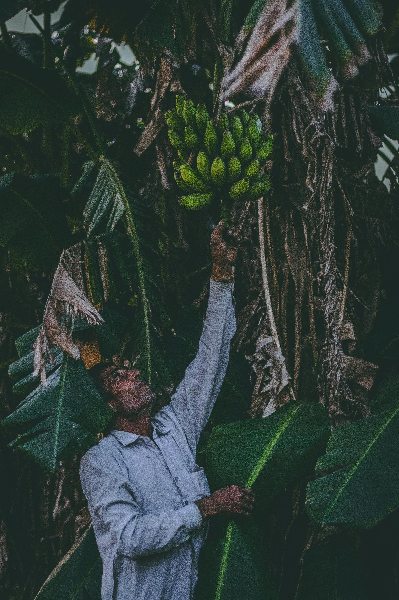

The Farming Challenge
Small and mid-sized farmers in emerging markets lack affordable, real-time data for informed decisions about planting, irrigation, and pest control, leading to low productivity and waste.

Our Smart Farming Solution
AI-driven precision farming tools powered by IoT sensors, drone imagery, and weather data APIs to optimize yield and reduce costs.
How It Works
- Deploy our affordable sensors in your fields
- Receive real-time data on your mobile device
- Get AI-powered recommendations
- Improve your harvest results
Core Services
Smart Crop Monitoring
- Satellite imagery and drone services
- Real-time alerts on pests and soil conditions
Weather-Based Insights
- Hyper-local weather predictions
- Planting/harvesting recommendations
IoT Device Integration
- Soil moisture sensors
- Smart irrigation systems
- Solar-powered weather stations
Farm Management System
- Track expenses, yields, and inventory
- Financial summaries and reports
Business Model
- Freemium: Basic features free, advanced tools paid
- Hardware-as-a-Service: Rent IoT devices and drones
- Data Licensing: Anonymized insights for agribusiness